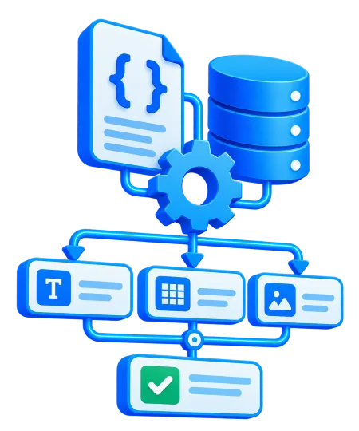
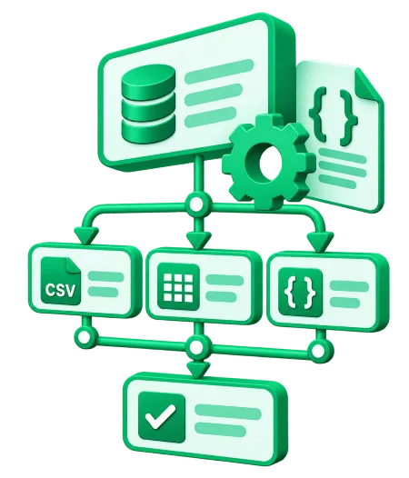

Organización de datos estructurados
Normalizamos registros, campos y formatos para que la información siga una estructura coherente.


Consulta las opiniones publicadas en la ficha de DataLabs.
Diseñamos automatizaciones para organizar, validar y conectar datos estructurados sin repetir el mismo trabajo en cada sistema.
Normalizamos registros, campos y formatos para que la información siga una estructura coherente.
Conectamos CRM, hojas de cálculo, bases de datos y aplicaciones para evitar duplicar información.
Aplicamos reglas para detectar registros incompletos, formatos erróneos y posibles duplicados.
Preparamos datos para trasladarlos entre herramientas sin perder de vista la estructura de origen y destino.
Generamos reportes actualizados y organizamos indicadores para facilitar el análisis empresarial.
Programamos tareas de captura, revisión y actualización para reducir intervenciones manuales.
Menos errores.
Más contexto.
Mejores datos.
Evita copiar información entre herramientas una y otra vez.
La información sigue un flujo definido de origen a destino.
Las validaciones ayudan a detectar errores antes de propagarlos.
Automatizaciones adaptables a nuevas fuentes y necesidades.
Partimos de cómo trabajáis hoy y diseñamos una solución que responda a los datos y sistemas de vuestra empresa.
Entendemos dónde están los datos, cómo llegan y qué problemas presentan.
Definimos campos, validaciones y conexiones entre aplicaciones.
Configuramos, probamos y documentamos el recorrido de la información.
Revisamos resultados y adaptamos el sistema cuando cambian las necesidades.
Reserva una asesoría de 30 minutos. Cuéntanos qué información gestionas y qué te gustaría automatizar.
Abrir calendario en otra ventana ↗Explícanos qué sistemas utilizas, qué información se repite o llega desordenada y qué resultado buscas.
Teléfono de atención: +34 910 05 40 12
En DataLabs ayudamos a empresas a organizar y automatizar datos estructurados procedentes de distintas aplicaciones, bases de datos, formularios y hojas de cálculo. Nuestro objetivo es reducir las tareas repetitivas y facilitar que cada equipo trabaje con información coherente.
Diseñamos procesos de limpieza y validación, transformaciones de formatos, integraciones entre sistemas y automatizaciones de actualización y seguimiento. Analizamos el origen de los datos, sus campos y sus reglas antes de proponer una solución ajustada a las necesidades reales de cada empresa.
Trabajamos desde Madrid con empresas de toda España. Si tu negocio necesita conectar registros, preparar una migración o mejorar el flujo de información entre departamentos, podemos estudiar el proceso contigo.